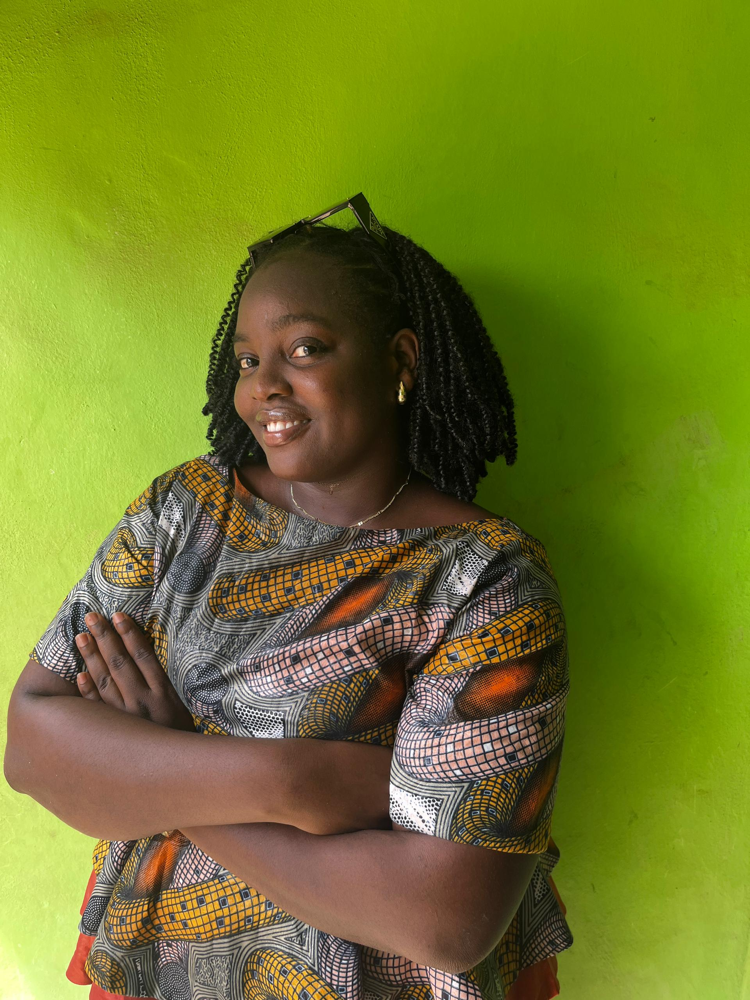

About Me
Welcome! I'm Adebimpe Aderoju, a dedicated student of web development enrolled in WDD 130 at BYUI. I'm passionate about creating user-friendly websites and applications. In my free time, I enjoy reading and socializing with people.
Lagos, Nigeria

Nigeria is a country located in West Africa, known for its rich cultural diversity, with over 250 ethnic groups. It is famous for its bustling cities, like Lagos, and its historical sites such as the Nok culture artifacts and the Aso Rock formation.